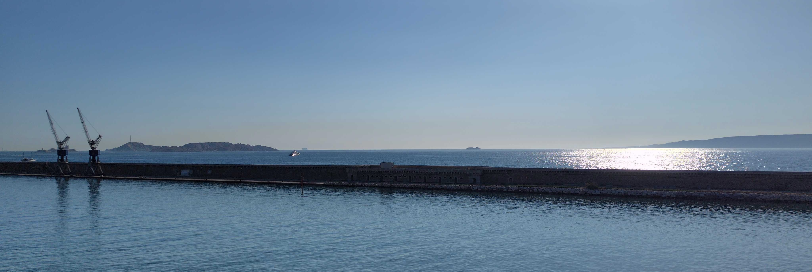
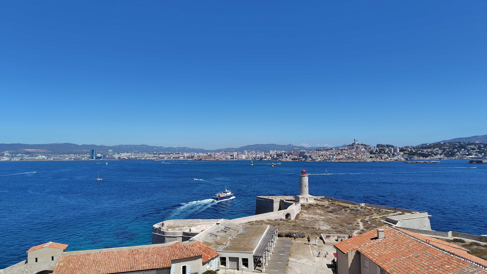
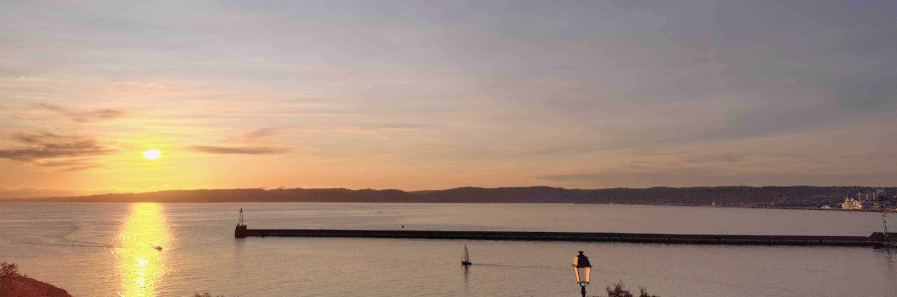

Marseille
Photo gallery
These photographs provide the visual background of this website.





Marseille
A small collection of photographs from Marseille.
These photographs provide the visual background of this website.

